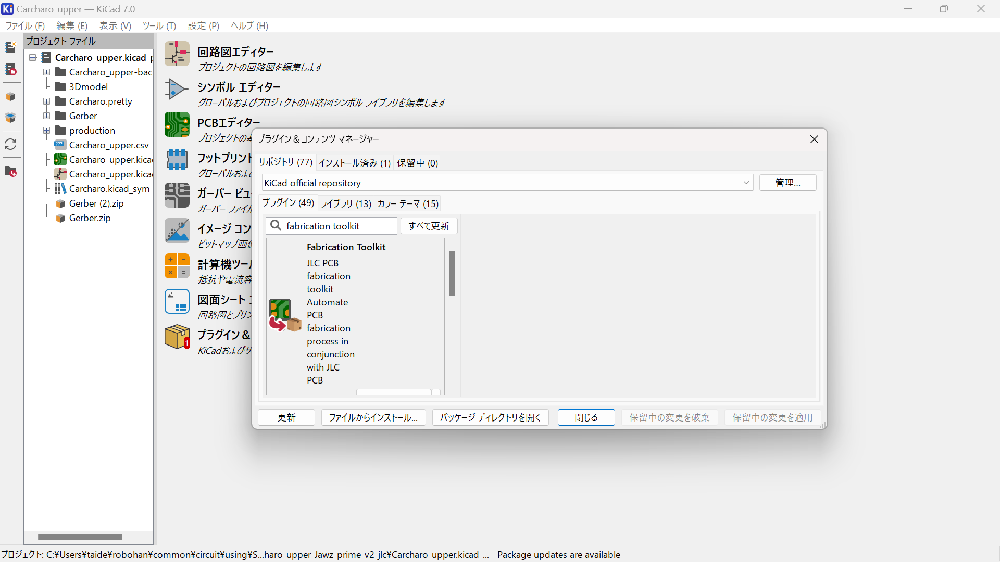

JLCPCB様より基板制作費のご支援をいただきました！
2023~2024シーズンに置きまして， JLCPCB様より基板制作費のご支援をいただきました！ 実際にJLCPCB様にPCBAを発注する方法についてまとめましたので，PCBAを使ってみたいけどやり方がわからない…という際に参考にしてみてください． また，後半ではその際に作っていただいた基板について，簡単に紹介します！
※この記事には，一部宣伝・広告に類する内容が含まれております．
NHK学生ロボコン2024に向けて支援をいただきました！
今回、大幅な基板変更により基板を大量に発注する必要が出てきたので、JLCPCB様から支援していただきました。
今回発注したものは以下の5種類の基板です。
- Driver基板（駆動部）
- STM32F767ZIT6を使用した、NucleoF767ZI代用基板*
- NucleoF767ZI代用基板の拡張基板
- デジタルヒューズ基板（制御部）
- Motor Driver基板（制御部）*
“*”がついているものは今回PCBAを使用しました。

JLCPCB様でのPCBAの発注方法
設定で時間がかかるものと思っていましたが、Kicadだとプラグインで簡単に出来ました。 私が今回発注に使用したファイルは以下の手順で生成しています。 （使用環境 Windows11 Kicad7）
- プラグイン導入
- 素子選択
- ファイル生成
- 基板データのアップロード
- PCBAのオプションを設定
- PCBAに関するデータをアップロード
- パーツの位置データの確認
- 最後に
プラグイン＆コンテンツ マネージャーから「Fabrication Toolkit」を選択してインストール
以下のURLから素子を選定し、Kicadの回路図シンボルのフィールドにLCSCという欄を追加して、値に選定した素子のコードを入力する。 「JLCPCBの素子リストURL」
＊LCSCという欄を作りコードを入力しなくても、ファイル生成時に抵抗やコンデンサ等だと予測して出力してくれるみたいですが、たまに違うことや、実装に値段がかかる素子の場合もあるので注意が必要です。

追加したプラグインのGenerateを選択。
→追加した素子のコードによって自動的に素子の位置情報などのファイルを勝手に生成してくれます。

上のようにディレクトリ直下にフォルダが生成されその中に発注に必要なファイルがすべて入っています。

ここからはJLCPCBの発注画面での操作です。通常の基板通り、Gerberデータとドリルデータのファイルをまとめたzipファイルをアップロードします。
→実はこのzipファイルも、先の手順で行った「production」のフォルダ下に生成されています。（設定とか忘れることがないので、とても楽ですね）
PCB Assemblyを有効にして、「実装面（Assembly Side）」、「実装する枚数（PCBA Qty）」、「実装後のズレの確認（Confirm Parts Placement）」に関して確認します。 （最後のはオプションなので、デフォルトでは無効になっていますが、ほぼ値段変わらないので、今回は有効にしています。）
上記の設定が終われば「Confirm」をクリックして実装する部品などのデータを上げていきます。

最初は先の選択内容に関して表示されているだけなので、問題がなければ「Next」を押してスルーします。

次に、「部品のデータ（BOM File）」と「部品の位置（CPL File）」を上げます。
→このデータに関しても「production」フォルダ下にそれぞれ「bom.csv」と「positions.csv」という形で生成されています。

データを上げた後はそのデータが正しいかの確認です。
基本的に先の、回路図での設定で上げた「LCSC」という欄に正しいコードを入れていれば問題はありません。
＊ 今回の方法では、「LCSCの欄がない」または、「LCSCの欄が無入力」の場合には、プラグインが素子を推測して、先のcsvファイルを生成することがあります。 その場合には、右側の「Select」のチェックを外すか、「Matched Part Detail」の検索ボタンで素子を変更することが出来ます。

最後に、先に確定させたパーツの位置データを確認します。
ここはしっかり確認しましょう。
フットプリントのデータは基本的に素子リストにある「Easy EDAのライブラリ」を使用しない限り、向きが異なる場合が多々あります。
向きが異なる場合、素子は以下のように個別に向きを変更することが出来ます。
素子の数が多い場合は、フットプリントを作る段階で
・「Easy EDA」から「Kicad」用のデータに変換
・「Easy EDA」を参考に向きを調整
上のどちらかを行っていれば、一つ一つ変更する手間がなく、楽にこのステップを終えることが出来ます。

以上でPCBAまでの設定が終わり、カートに入っていると思います。 あとは「配送方法」や「支払方法」を選択して発注をかけましょう。
プラグインを使用することで、「基板を初めて発注する方」、「PCBAを利用しない方」も含めて、ボタン一つで必要なファイルがすべて生成され、とても簡単に発注が行えると思います。
この記事が、基板を発注する手助けになれば幸いです。
PCBAを使用してみて
正直こんなに簡単ならもう少し早く使ってもよかったですね。実装量が多くて人手が足りないと精神的にしんどくなるので。
今回設計していた基板は設計初期ではPCBAを使用するつもりがなかったので、PCBAを採用する段階で使用する素子を変更したりしました。在庫がないものとかもあったので、PCBAを使用するなら初めからJLCPCBの素子リストから選択する方がいいですね。
一番驚いたのは基本的な素子の値段が普通に買うより安いことです。実装する手数料とかで値段が上がる感じだったので、大量に同じ素子を使用する場合や、一つあたりの単価がかなり大きい素子（今回ならSTM32F767ZIT6）は手数料込みでも明らかに安く実装できたので、積極的に使っていきたいですね。（基本的な抵抗やコンデンサ等は手数料すらかからない物もある）
軽い基板紹介
- Motor Driver基板（駆動部）
- Motor Driver基板（制御部）
- STM32F767ZIT6を使用した、NucleoF767ZI代用基板
- NucleoF767ZI代用基板の拡張基板
- デジタルヒューズ基板（制御部）
→小型のDCブラシモータ用のモータドライバです。
縦刺しタイプで、3cellのリポバッテリーしか使用できませんが、定常60Aまで流すことが出来ます。小型化にこだわったので、サイズは28.5×50(mm)です。小さいことで8層の基板ですが、JLCPCBで発注すると通常の2層基板と変わらない値段（2ドル）で発注できます。
→モータドライバ基板の駆動部を制御する基板です。
PWM信号を２つ各基板に供給しているものです。
以下のような感じで高さは多少ありますが全体はコンパクトに収まっています。
写真の真ん中の基板はヒートシンクと、分電を担っている基板でこちらは別のタイミングでJLCPCB様に発注をかけたものです。
→今までRobohanで使用していたNUCLEOF767ZIT6の代用基板です。
使用する機能が限られていたので、それら(CAN、Ethernet、LTCD、SDMMC等)を基板単体で使用できるようにした基板です。
→自己位置推定を行うために、6軸のジャイロセンサ、3つの接地エンコーダを取れるようにしたものです。
6軸なのでyaw軸のフィルタは接地エンコーダの値も参照する必要があります。
外部に基板を追加しなくても簡単に使えるので使い勝手はよくなったと思います。
→今までRobohanではブレーカー（バイメタルで熱変形して遮断するタイプ）を使用していたのですが、「電流によっては遮断までの時間が長い」という点から、こちら側で遮断できる電流を選択できるように基板を作りました。
構成は簡単です。
マイコン等の電源用には市販のデジタルヒューズ（東芝のやつ）、モータ等の大電流用にはハイサイドのNchMosfetでのスイッチと、電流センサ、突入電流保護機能を追加して、大電流を比較的安全に遮断できるようにしました。
マイコンによる制御で遮断するので、こちらで細かく調整できるのがいいですね。
一応、最悪の場合に備えて、車載用のヒューズも搭載しています。
外部からオンオフすることも出来ます。
写真の下の基板は駆動するmosfet等が載っている基板で、こちらも別のタイミングでJLCPCB様に発注をかけたものです。
おわりに
今更ですが、8層まで50×50(mm)まで同じ値段で発注できるのはすごいことですね。 一度、サイズ超えてしまって発注しようとしたときの値段に驚いたことがありますが、本来それだけの値段がかかるものだと思って感謝しながら発注のボタンを押しています。しかし、使ってみて勝手が分かるので、将来個人で発注する必要がある時は大きいサイズの基板も発注してみたいですね。
最後に、今回の学生ロボコンには残念ながら使用することが出来ませんでしたが、今後に生かすことの出来る基板を発注することが出来ました。
支援していただいたJLCPCB様、本当にありがとうございます。
新規スポンサー様募集中！
Robohanの活動を応援していただけるスポンサー様を募集しております.
資金提供(一口2000円から)のほか，技術提供や物資の現物提供などの形での支援も募集しております．
下のお問い合わせからご連絡ください．